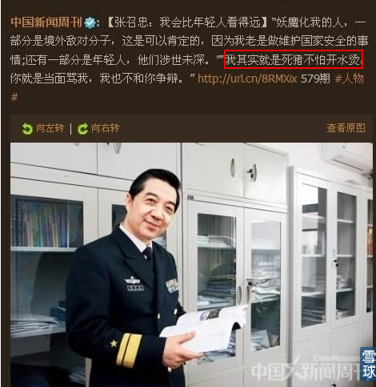
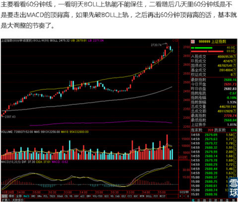
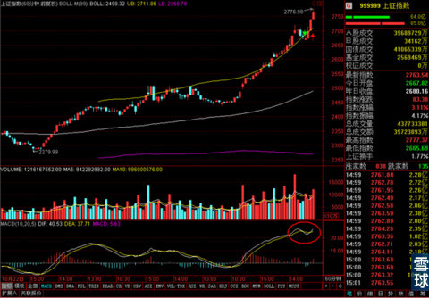
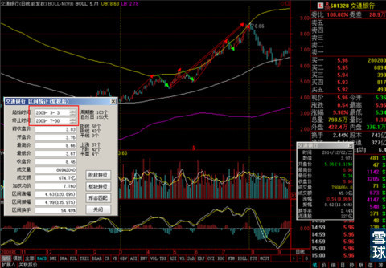
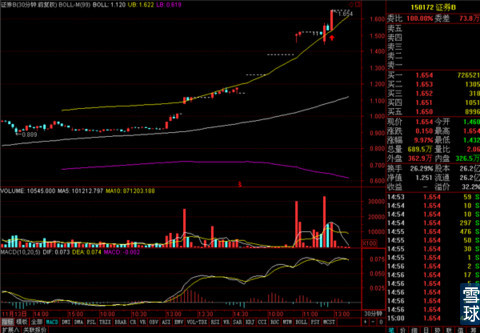
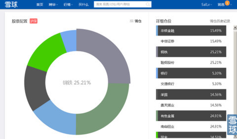

今天的行情实在是很让人激动啊。
先感谢一下大家的支持和鼓励，关于昨天吊打那些负面言论的事我要说一下，这么多年接触股市和股民，那种言论见得多去了，请大家放心。我已经修炼到了张召忠将军的境界了，那些言论对我无损分毫的。

为什么要吊打他们，首先我虽然是学的经济学和金融，但是我高中读的是文科班，业余爱好都是文史经哲。我骨子里其实是个可耻的文艺青年。所以写东西的时候比较在意搞出点引子和由头，这样内容能不单调，大家读起来也不乏味。
有些人为什么不喜欢出身底层的人？ - 刘鹏程Sai.L 的回答
你们看看我这类答案就知道我的文风和不着调时的样子了。
其次批判那些言论也是想提醒我们自己，他们是因为不了解就随意黑股市，但是我们呢？我知道关注这个专栏的小伙伴们对股市都是有信心和有憧憬的，但是我们这种信心和憧憬的由来就一定是正确的么？我们自己是因为财富效应的吸引，还是对股市有真正的理解才来密切关注和参与股市的呢？包括我自己，即使上学学的金融，在券商工作过，但是我自己早期对股市依然有很多很幼稚的认知，还自以为是对的，结果因此吃过亏。所以写他们是为了对比和提醒我们自己。
说说今天的大盘吧，很多年不见这样的盛况了，在连续逼空上涨之后还能拉出这样的涨幅，同时成交量也配合，金融类股票全线崛起。
一来证实了那句话，牛市不言顶，熊市不言底。上证指数虽然涨得疯狂，但是只要是买入的时间比较早的小伙伴，可以等到5日，10日，20日均线依次向下弯折的时候再减仓就可以。不要因为对上涨的恐惧而过早离场出局。
昨天特意给大家截图看过了，一般情况下，只要是连续上涨，很少有V字反转，大多数是会给大家一个合理的次高点减仓出局的，如果真的有这样的情况，我会尽可能及时的通知大家。
二来证实真正的牛市里，是没有涨不起来的股票，即使是行业周期低迷，股价极度被低估的股票。看看这几天，上涨的最凶的很多都是之前严重跌破净资产的股票。
昨天关于今天是走是留的问题，我是这么写的

而今天的60分钟走势是这样的，

一来虽然是跌破过60分钟线上轨，但是不是有效跌破，很快就收了回去。二来是MACD走势还没有出现顶背离。所以今天继续持有是没有问题的。
板块上，今天领涨的依然是“金融三杰”。证券板块甚至差一点整体涨停，仔细观察一下前十的板块，环保和多元金融这样的前期大涨的过的白马板块有回归迹象，说明大盘现在的权重上冲还是健康的。不是仅仅靠权重拉指数。
大盘收盘后的股指期货走势几乎是平的，明天最首先要盯住的还是上证指数60分钟线上轨。
有很多小伙伴昨天看到我减仓银行股之后，有一些疑惑。这个简单说一下，首先我是减仓而不是出清，我只减了一半的交通银行。其次减仓的原因是昨天收了一条超长的上影线，我在2010年“煤飞色舞”那波行情里吃了一次大亏就是因为中石油异动，上证指数长上影出现，我没减仓。所以从那之后我对超长上影线的走势很反感，只要某只我持有的股票一出现超长上影线的话，无论个周期指标是不是比较向好，我都会多少减一点仓位的。这是我个人的一点小纠结，大家不要学这个。同时因为交通银行的60分钟线并没有太大问题，所以我只减了一半。
另外，我推荐大家持有交通银行是希望大家能中长线持有的，

我希望大家做的是图中双箭头那段，我自己折腾它是为了提高资金利用率，试着做出来单箭头的那种趋势中分段抓波动的做法。为什么这样，关键是大家都要上班工作，精力和时间有限，主要抓住整体趋势就好。我自己在家主要时间都是写稿和看盘，所以我就追求一下资金利用率能不能更高效一点。同时我要说的是，我画的是理想状态，抓波动我十次里也会错三次左右，也经常会有这边减仓出来看调整，结果短期趋势看错了，最后多花成本接回来的情况。
所以对于一些中长线的股票，大家就耐心持有吧，真正大趋势见顶的时候咱们再一起卖掉它。
而且这里说明一下，之前这个专栏关注的人数还比较少，而且行情还在盘整和启动之间不是很确定，那时候我推荐过比较短期和激进一点的股票，比如当时的百花村，营口港和本钢板材。现在关注专栏的人多了，行情也是稳稳的牛市行情，所以尽量推荐大家能持有时间比较长，不用多操作的股票。同时申明一点，不要绝对在意我说的话，虽然开专栏以来我预测的大趋势和选择出来的股票涨势都还说得过去，但是这段时间市场氛围也很好，只是我选择出来的股票比一般股票涨幅多一点而已。但是我也是普通人，虽然经验多一些，到了震荡市或者是熊市那种不好做的行情，我一样会犯错的。所以注意我选择股票的理由，看看是不是我在选择的时候判断标准符合大家自己的预期，是不是有什么地方我也没有想周全。这才是这个专栏存在的意义和关键。
PS.今天在尾盘看到证券B守住30分钟上轨并有向上动作，所以少量的抢了一点。这个是纯短线行为，看看这个逻辑就好，不要随意模仿，因为明天机会可能就变风险了。

另外给大家看一下雪球里我的模拟仓组合，

 |
今天的行情实在是很让人激动啊。SaiLv 2014-12-02 16:00:13 |
Copyright © 1996-2014 SINA Corporation All Rights Reserved.